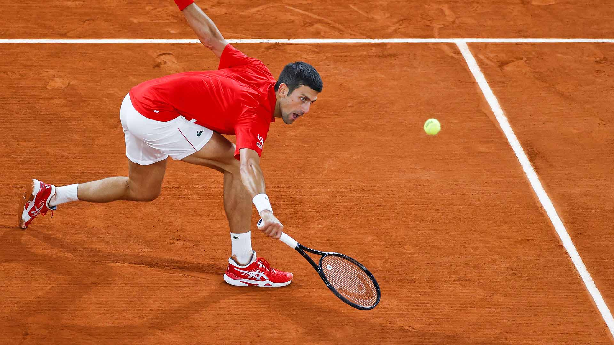

סוגי חבטות
חבטת הגשה | |
|---|---|
|
חבטת הגשה (אנ') (Serve). במכה זו משתמשים בתחילת כל נקודה. כל שחקן בתורו מגיש למשך משחקון את החבטה ההתחלתית. ניתן לזרוק ולחבוט את הכדור מהאוויר בכל צורה, אולם הצורה היעילה ביותר שנותנת יתרון לשחקן המגיש ומקשה על השחקן המקבל - ובה משתמשים כמעט בכל המקרים - היא החבטה האנכית: בחבטה זו יד שמאל שאוחזת בכדור במקביל למחבט, זורקת אותו אנכית, ובו זמנית יד ימין מביאה את המחבט אל אחורי הגב דרך הכתף, ומכה בכדור כאשר הוא יורד ומגיע מעל גוף השחקן. |

|
חבטת כף יד | |
|
חבטת כף יד (אנ') (Forehand). מיועדת לכדור המגיע לימין השחקן. רגל שמאל וכתף שמאל ניצבות קדימה, כאשר צדודית הגוף למול המתחרה, כף יד ימין אוחזת במחבט, מביאה אותו בתנועה מלמטה למעלה מעל גובה כתף ימין, ומחזירה אותו תוך כדי חבטה בכדור. |
|
חבטת גב יד | |
|
חבטת גב יד (Backhand). מיועדת לכדור המגיע לצד היד החלשה של השחקן. רגלה חזקה וכתף של היד החזקה ניצבות קדימה, כאשר צדודית הגוף למול המתחרה, כף יד החזקה אוחזת במחבט, מביאה אותו בתנועה מלמטה למעלה מעל גובה כתף של היד החלשה, וחובטת בכדור, כאשר גב היד מופנה לעבר כיוון הכדור. מקובלת גם חבטת 'גב יד' בשתי ידיים, כלומר גם יד ימין וגם יד שמאל אוחזות במחבט וחובטות בכדור. |

|
דרופ שוט | |
|
דרופ שוט (drop shot) – חבטת סלייס (ר' ערך) שבה הכדור נוחת קרוב מאוד לרשת ובקושי קופץ, מה שמקשה מאוד על היריב להגיע ולהעביר אותה כראוי. |
 |
חבטת volley | |
|
במכה זו משתמשים, בדרך כלל, כאשר מתקרבים לרשת (אם כי ניתן להשתמש בה בכל מקום במגרש) ורוצים לסיים נקודה מעמדה התקפית הקרובה לרשת. מכה זו נעשית מן האוויר. |
|
חבטת smash | |
|
מכה אנכית חזקה, לרוב מבוצעת על ידי שחקן הטניס כשהוא קרוב לרשת. הכדור קופץ כה גבוה, עד שלא ניתן להשיב את חבטה כיוון שהוא יוצא מגבולות המגרש. |
|
חבטת topspin | |
|
סוג הסיבוביות הנפוץ ביותר, מכיוון שהוא מקטין את סיכויי השגיאה של השחקן. בחבטה השחקן צריך להביא את המחבט אל מתחת לכדור ולאחר הפגיעה בכדור יש לסובב במהירות את פרק כף היד. ככה נוצר הסיבוב. |